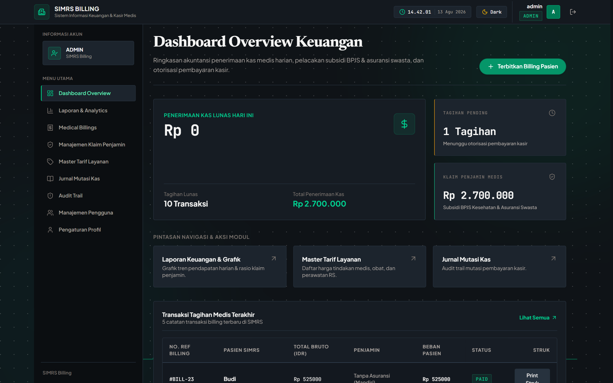

Enterprise Web AppSIMRS Billing — Sistem Informasi Manajemen Rumah Sakit
Masalah & Latar Belakang
Sistem penagihan rumah sakit (SIMRS) konvensional yang lambat, berisiko kesalahan kalkulasi desimal keuangan, serta rawan klaim ganda dan transaksi kasir tanpa otorisasi.
Tantangan Unik
Mengembangkan monorepo enterprise Full-Stack (Backend Go/Gin & Frontend React 19/Vite 6) dengan otorisasi 2FA kasir, proteksi transaksi idempoten (X-Idempotency-Key), matematika presisi desimal (shopspring/decimal), serta integrasi ImageKit API.
Dampak & Solusi Teknis
Kalkulasi tagihan medis presisi 100%, verifikasi klaim BPJS & asuransi swasta terstruktur, audit trail real-time aktivitas kasir, dan portal mandiri pasien.
"Menghadirkan presisi keuangan dan keandalan sistem berstandar enterprise pada operasional rumah sakit."
Go (Golang)
Gin
React 19
PostgreSQL
GORM
Tailwind CSS
ImageKit API